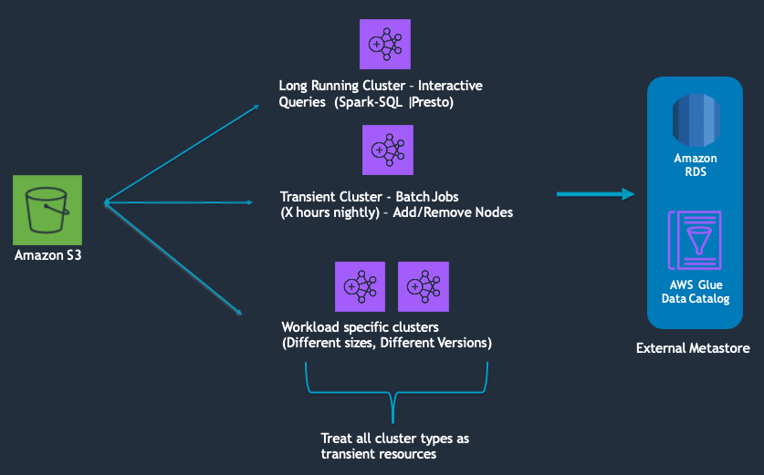

2 - Reliability ¶
Best Practices (BP) for running reliable workloads on EMR.
BP 2.1 Treat all clusters as transient resources ¶
Whether you use your EMR cluster as a long or short running cluster, treat them as transient resources. This means you have the automation in place to re-provision clusters on demand and have standard templates to ensure cluster startup consistency. Even if you are using a long running clusters, it’s recommended to recreate the cluster during some periodical interval.
Services integrated with clusters also need to be decoupled from the cluster. For example any persistent data, meta data, scripts, and job/work orchestrator's (e.g oozie and airflow) should be stored off cluster. Decoupling the cluster from these services minimizes blast radius in the event of a cluster failure and non impacted clusters can continue using these off-cluster services.
There are several benefits to this approach. It makes upgrading, patching, rotating AMI’s or making any other infrastructure changes easier. It allows you to quickly recover from failures and it removes the operational overhead of managing a long running cluster. You may also see an improvement in cost since clusters will only run for the duration of your job or use case.
If you need to store state on cluster, ensure the state is backed up and synced.

For more information on orchestrating transient EMR cluster, see:
https://aws.amazon.com/blogs/aws/new-using-step-functions-to-orchestrate-amazon-emr-workloads/
https://docs.aws.amazon.com/emr/latest/ManagementGuide/emr-plan-longrunning-transient.html
Specifically for EMR application logging, consider using EMR’s Persistent Application User Interfaces (Spark, YARN RM, Tez UI, etc) which are hosted by EMR off cluster and available even after clusters are terminated.
For more information on off cluster monitoring options, see:
https://docs.aws.amazon.com/emr/latest/ManagementGuide/app-history-spark-UI.html
For more information on external catalog, see:
https://docs.aws.amazon.com/emr/latest/ReleaseGuide/emr-metastore-external-hive.html
BP 2.2 Decouple storage and compute ¶
Store persistent data in Amazon S3 and use the EMR File System (EMRFS) for reading and writing data from Amazon EMR. EMRFS is an implementation of HDFS that all Amazon EMR clusters use for accessing data in Amazon S3. Applications such as Apache Hive and Apache Spark work with Amazon S3 by mapping the HDFS APIs to Amazon S3 APIs (like EMRFS available with Amazon EMR). You specify which file system to use by the prefix of the URI used to access the data. For example, s3://DOC-EXAMPLE-BUCKET1/path references an Amazon S3 bucket using EMRFS.
By keeping persistent data in Amazon S3, you minimize the impact that infrastructure or service disruptions can have on your data. For example, in the event of an EC2 hardware failure during an application run, data in Amazon S3 will not be impacted. You can provision a new cluster and re run your application that points to the existing S3 bucket.
From an application and user perspective, by decoupling storage and compute, you can point many EMR clusters at the same source of truth. If you have different departments that want to operate different jobs, they can act in isolation without affecting the core production of your environment. This also allows you to split interactive query workloads with ETL type workloads which gives you more flexibility in how you operate For example, In an Amazon EMR environment you can provision a new cluster with a new technology and operate it in parallel on your data with your core production environment. Once you make a decision on which technology to adopt, you can easily cut over from one to other. This allows future proofing and option value because you can keep pace the analytic tool set evolves, your infrastructure can evolve with it, without any expensive re platforming or re transformation of data.
HDFS is still available on Amazon EMR clusters and is a good option for temporary or intermediate data. For example, workloads with iterative reads on the same data set or Disk I/O intensive workloads. For example, some hive jobs write a lot of data to HDFS, either staging data or through a multi step pipeline. It may be more cost efficient and performant to use HDFS for these stages compared to writing to Amazon S3. You lose the HDFS data once EMR clusters are terminated so this should only be used for intermediate or staging data. Another strategy is to ensure that when using HDFS, you checkpoint data at regular intervals so that if you lose cluster mid-work, you do not have to restart from scratch. Once data is written to HDFS, you can use something like s3distcp to move your data to Amazon S3.

BP 2.3 Use the latest AMI and EMR version available ¶
In the Cost Optimization section, we talked about the benefits of using the latest EMR version. Equally important is using the latest AMI available. This ensures your up to date with the latest bug fixes, features and security updates. EMR allows has 2 AMI options available - default EMR AMI and Custom AMI.
The default EMR AMI is based on the most up-to-date Amazon Linux AMI available at the time of the Amazon EMR release. Each Amazon EMR release version is "locked" to the Amazon Linux AMI version to maintain compatibility. This means that the same Amazon Linux AMI version is used for an Amazon EMR release version even when newer Amazon Linux AMIs become available. For this reason, we recommend that you use the latest Amazon EMR release version unless you need an earlier version for compatibility and are unable to migrate.
When using a custom AMI, it is recommended to base your customization on the most recent EBS-backed Amazon Linux AMI (AL2 for 5.30.0 and later). Consider creating a new custom EMR AMI each time a new AL AMI is released.
For more information, see:
https://docs.aws.amazon.com/emr/latest/ManagementGuide/emr-default-ami.html
BP 2.4 Spread clusters across Availability Zones/subnets and time of provisioning ¶
Spread clusters across multiple Availability Zones (AZ) to provide resiliency against AZ failures. An added benefit is that it can help reduce insufficient capacity errors (ICE) since your EC2 requests are now across multiple EC2 pools. Instances of a single cluster can only be provisioned in a single AZ.
EMR helps you achieve this with Instance Fleets. Instead of specifying a single Amazon EC2 Availability Zone for your Amazon EMR cluster and a specific Amazon EC2 instance type for an Amazon EMR instance group, you can provide a list of Availability Zones and instances, and Amazon EMR will automatically select an optimal combination based on cost and availability. For example, if Amazon EMR detects a large-scale event in one or more of the Availability Zones, or cannot get enough capacity, Amazon EMR automatically attempts to route traffic away from the impacted Availability Zones and tries to launch clusters in alternate Availability Zones according to your selections.
With Instance Groups, you must explicitly set the subnet at provisioning time. You can still spread clusters across your AZs by selecting AZ's through a round robin or random strategy.

If your use case allows, spread cluster provisioning times across the hour or day to distribute your requests to EC2 instead of provisioning clusters at the same time. This decreases the likelihood of getting insufficient capacity errors.
For more information, see:
https://docs.aws.amazon.com/emr/latest/ManagementGuide/emr-instance-fleet.html
BP 2.5 Use on demand for core nodes and spot for task ¶
Core nodes run the Data Node daemon to coordinate data storage as part of the Hadoop Distributed File System (HDFS). If a core node is running on Spot Instances and the Spot node is reclaimed, Hadoop has to re balance the data in HDFS to the remaining core nodes. If there are no core nodes remaining, you run the risk of losing HDFS data and the name node going into safe mode making the cluster unhealthy and unusable.

BP 2.6 Use Instance Fleet with an allocation strategy ¶
The Instance Fleets configuration for Amazon EMR clusters lets you select a wide variety of provisioning options for Amazon EC2 instances, and helps you develop a flexible and elastic resourcing strategy for each node type in your cluster.
You can have one Instance Fleet for each node group - master, core and task. Within the Instance Fleet, you specify a target capacity for on-demand and spot instances and with the allocation strategy option, you can select up to 30 instance types per fleet.

In an Instance Fleet configuration, you specify a target capacity for On-Demand Instances and Spot Instances within each Fleet. When the cluster launches, Amazon EMR provisions instances until the targets are fulfilled using any of the instances specified if your fleet. When Amazon EC2 reclaims a Spot Instance in a running cluster because of a price increase or instance failure, Amazon EMR tries to replace the instance with any of the instance types that you specify. This makes it easier to regain capacity during a spike in Spot pricing.
It is recommended that you use the allocation strategy option for faster cluster provisioning, more accurate Spot Instance allocation, and fewer Spot Instance interruptions. With the allocation strategy enabled, On-Demand Instances use a lowest-price strategy, which launches the lowest-priced instances first. Spot Instances use a capacity-optimized strategy, which launches Spot Instances from pools that have optimal capacity for the number of instances that are launching. For both On-demand and spot, we recommend specifying a larger number of instance types to diversify and reduce the chance of experiencing insufficient capacity errors.
For more information, see:
BP 2.7 With Instance Fleet, diversify with instances in the same family and across generations first ¶
Best practices for instance and availablity zone flexibility can be found, here:
https://docs.aws.amazon.com/emr/latest/ManagementGuide/emr-flexibility.html
BP 2.8 With Instance Fleet, ensure the unit/weight matches the instance size or is proportional to the rest of the instances in your fleet ¶
When using Instance Fleets, you can specify multiple instance types and a total target capacity for your core or task fleet. When you specify an instance, you decide how much each instance counts toward the target. Ensure this unit/weight matches the actual instance size or is proportional to the rest of the instances in your fleet.
For example, if your fleet includes: m5.2xlarge, m5.4xlarge and m5.8xlarge. You would want your units/weights to match the instance size - 2:4:8. This is to ensure that when EMR provision your cluster or scales up, you are consistently getting the same total compute. You could also do 1:2:4 since they are still proportional to the instance sizes. If the weights were not proportional, e.g 1:2:3, each time your cluster provisions, your total cluster capacity can be different.
BP 2.9 If optimizing for availability, avoid exotic instance types ¶
Exotic instances are designed for specific use cases, and includes instance types whose name ends with “zn”, “dn“, and “ad", as well as large instance types like 24xlarge. Exotic instance type capacity pools are generally smaller, which increases the likelihood of Insufficient Capacity Errors and Spot reclamation. It is recommended to avoid these types of instances if your use case does not have requirements for these types of instances and you want higher instance availability.
BP 2.10 Handling S3 503 slow downs ¶
When you have an increased request rate to your S3 bucket, S3 might return 503 Slow Down errors while scaling to support the request rate. The default request rate is 3,500 PUT/COPY/POST/DELETE and 5,500 GET/HEAD requests per second per prefix in a bucket. There are a number of ways to handle S3 503 responses:
1) Use EMRFS retry strategies
EMRFS provides 2 ways to improve the success rate of your S3 requests. You can adjust your retry strategy by configuring properties in your emrfs-site configuration.
-
Increase the maximum retry limit for the default exponential back-off retry strategy. By default, the EMRFS retry limit is set to 4. You can increase the retry limit on a new cluster, on a running cluster, or at application runtime. (for example try 20-50 by setting
fs.s3.maxRetriesinemrfs-site.xml) -
Enable and configure the additive-increase/multiplicative-decrease (AIMD) retry strategy. AIMD is supported for Amazon EMR versions 6.4.0 and later.
For more information, see:
https://docs.aws.amazon.com/emr/latest/ReleaseGuide/emr-spark-emrfs-retry.html
2) Increase fs.s3n.multipart.uploads.split.size
- Specifies the maximum size of a part, in bytes, before EMRFS starts a new part upload when multipart uploads is enabled. Default is 134217728 (134mb). The max is 5368709120 (5GB) – you can start with something in the middle and see if there’s any impact to performance (for example 1-2 gb)
For more information, see:
https://docs.aws.amazon.com/emr/latest/ManagementGuide/emr-plan-upload-s3.html#Config_Multipart
3) Combine or stagger out requests to S3
Combining requests to S3 reduces the number of calls per second. This can be achieved in a few ways:
- If the error happens during write, reduce the parallelism of the jobs. For example, use Spark
.coalesce()or.repartition()operations to reduce number of Spark output partitions before writing to Amazon S3. You can also reduce the number of cores per executor or reduce the number of executors. - If the error happens during read, compact small files in the source prefix. Compacting small files reduces the number of input files which reduces the number of Amazon S3 requests.
- If possible, stagger jobs out across the day or hour. For example, If your jobs don’t all need to start at the same time or top of the hour, spread them across the hour or day to smoothen out the requests to S3.
For more information, see:
https://aws.amazon.com/premiumsupport/knowledge-center/emr-s3-503-slow-down/
4) Optimize your S3 Data layout
Rate limits (3,500 write and 5,500 read) are applied at the prefix level. By understanding your job access patterns, you can reduce throttling errors by partitioning your data in S3
For example, comparing the two s3 structures below, the second example with product in the prefix will allow you to achieve higher s3 request rates since requests are spread across different prefix. The S3 bucket limit would be 7,000 write requests and 11,000 read requests.
s3://<bucket1>/dt=2021-11-01
s3://<bucket2>/product=1/dt=2021-11-01
s3://<bucket2>/product=2/dt=2021-11-01
It is also important that your S3 data layout is structured in a way that allows for partition pruning. With partition pruning, your applications will only scan the objects it needs and skip over the other prefixes reducing the number of requests to S3.
For more information, see:
BP 2.11 Audit and update EMR and EC2 limits to avoid throttling ¶
Amazon EMR throttles API calls to maintain system stability. EMR has two types of limits:
1) Limit on Resources - maximum number of clusters that can
- The maximum number of active clusters that can be run at the same time.
- The maximum number of active instances per instance group.
2) Limits on APIs
- Burst limit – This is the maximum number of API calls you can make at once. For example, the maximum number of AddInstanceFleet API requests that you can make per second is set at 5 calls/second as a default. This implies that the burst limit of AddInstanceFleet API is 5 calls/second, or that, at any given time, you can make at most 5 AddInstanceFleet API calls. However, after you use the burst limit, your subsequent calls are limited by the rate limit.
- Rate limit – This is the replenishment rate of the API's burst capacity. For example, replenishment rate of AddInstanceFleet calls is set at 0.5 calls/second as a default. This means that after you reach the burst limit, you have to wait at least 2 seconds
(0.5 calls/second X 2 seconds = 1 call)to make the API call. If you make a call before that, you are throttled by the EMR web service. At any point, you can only make as many calls as the burst capacity without being throttled. Every additional second you wait, your burst capacity increases by 0.5 calls until it reaches the maximum limit of 5, which is the burst limit.
To prevent throttling errors, we recommend:
- Reduce the frequency of the API calls. For example, if you’re using the DescribeStep API and you don’t need to know the status of the job right away, you can reduce the frequency of the call to 1min+
- Stagger the intervals of the API calls so that they don't all run at the same time.
- Implement exponential back-off (https://docs.aws.amazon.com/general/latest/gr/api-retries.html) when making API calls.
For more information, see:
https://docs.aws.amazon.com/emr/latest/ManagementGuide/emr-service-limits-what-are.html
BP 2.12 Set dfs.replication > 1 if using Spot for core nodes or for long running clusters ¶
dfs.replication is the number of copies of each block to store for durability in HDFS. If dfs.replication is set to 1, and a Core node is lost due to spot reclamation or hardware failure, you risk losing HDFS data. Depending on the hdfs block that was lost, operating software may be affected and you may not be able to perform certain EMR actions - for example to submit a Hive job if the Tez library in HDFS is missing.
dfs.replication defaults are set based off of initial core count:
https://docs.aws.amazon.com/emr/latest/ReleaseGuide/emr-hdfs-config.html
To ensure the core node instance group is highly available, it is recommended that you launch at least two core nodes and set dfs.replication parameter to 2.
Few other considerations:
- Do not scale your node count below
dfs.replication. For example ifdfs.replication=3, keep your core node minimum to 3 - Increasing
dfs.replicationwill require additional EBS storage
BP 2.13 Right size your EBS volumes to avoid UNHEALTHY nodes ¶
When disk usage on a core or task node disk (for example, /mnt or /mnt1) exceeds 90%, the disk will be marked as unhealthy. If fewer than 25% of a node's disks are healthy, the NodeManager marks the whole node as unhealthy and communicates this to the ResourceManager, which then stops assigning containers to the node.
If the node remains UNHEALTHY for more than 45 minutes, YARN ResourceManager gracefully decommissions the node when termination protection is off. If termination protection is on, the core nodes remain in an UNHEALTHY state and only task nodes are terminated.
The two most common reasons disk’s exceed 90% are writing of HDFS and spark shuffle data. To avoid this scenario, it is recommended to right size your EBS volumes for your use case. You can either add more EBS volumes or increase the total size of the EBS capacity so that it never exceeds the default 90% utilization disk checker rate.
From a monitoring and alerting perspective, there are a few options. You can monitor and alert on HDFS utilization using the Cloudwatch metric HDFSUtilization. This can help determine if disks are exceeding the 90% threshold due to HDFS usage. At a per node and disk level, using options in BP 1.12 can help identify if disk is filling due to spark shuffle or some other process. At a cluster level, you can also create an alarm for the MRUnhealthyNodes CloudWatch metric which reports the number of nodes reporting an UNHEALTHY status. Since UNHEALTHY nodes are excluded from processing tasks from YARN Resourcemanager, having UNHEALTHY nodes can degrade job performance.
The 90% is a default value which can be configured by yarn.nodemanager.disk-health-checker.max-disk-utilization-per-disk-percentage in yarn-site.xml. However, to fix nodes going UNHEALTHY, it is not recommended to adjust this %, but instead right size your EBS volumes.
For more information, see:
https://aws.amazon.com/premiumsupport/knowledge-center/emr-exit-status-100-lost-node/
https://docs.aws.amazon.com/emr/latest/ManagementGuide/UsingEMR_TerminationProtection.html
Calculating required HDFS utilization: https://docs.aws.amazon.com/emr/latest/ManagementGuide/emr-plan-instances-guidelines.html#emr-plan-instances-hdfs